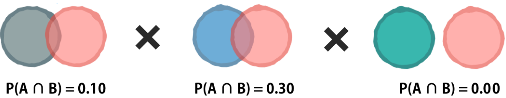

These models instead of trying to predict the posterior probability ( \(Pr(Y=k|X=x)\) ) directly, they try to estimate the distribution of the predictors \(X\) separately in each of the response classes \(Y\) ( \(f_{k}(X) = Pr(X|Y=k)\) ). Then, they use the Bayes’ Theorem and the overall or prior probability\(\pi_{k}\) (probability of a randomly chosen observation comes from the \(k\)th class) to flip these around into estimates for \(Pr(Y=k|X=x)\) by approximating the Bayes Classifier, which has the lowest total error rate.
\[
p_{k}(x) = Pr(Y = k | X = x) = \frac{\pi_{k} f_{k}(x)} {\sum_{l=1}^{K} \pi_{l} f_{l}(x)}
\]
Estimating the prior probability can be as easy calculate \(\hat{\pi}_{k} = n_{k}/ n\) for each \(Y\) class by assuming that the trainning data its representative of the population, but estimating the density function of \(X\) for each class \(f_{k}\) it’s more challenging, so models need to make more simplifying assumptions to estimate it.
6.1 Linear Discriminant Analysis (LDA)
This model assumes that:
The density function of \(X\) for each \(Y\) class \(f_{k}\) follows a Normal (Gaussian) distribution within each class. Even though, it is often remarkably robust to model violations like Boolean variables.
\(X\) has a different mean across all \(Y\) classes \(\mu_{1}^2 \neq \dots \neq \mu_{k}^2\).
\(X\) has a common variance across all \(Y\) classes \(\sigma_{1}^2 = \dots = \sigma_{k}^2\).
To understand how the model calculates its parameters, let’s see the discriminant function when the number of predictors is \(p=1\) and the number of \(Y\) classes is \(K=2\).
In this function, it’s clear that a class \(k\) has more possibilities to be selected as mean of \(x\) for that particular class increases and its variance decreases. It is also important to take in consideration the effect of \(\log{(\pi_{k})}\), in consequence the proportion of classes also influence the results.
If we want to extend the model to work with \(p \geq 1\) we also need to consider that:
Each individual predictor follows a one-dimensional normal distribution
There is some correlation between each pair of predictors
\(x\) refers to a vector the current value of each \(p\) element.
\(\mu\) refers to a vector with the mean of each predictor.
\(\Sigma\) refers to the covariance matrix \(p \times p\) of \(\text{Cov}(X)\).
The model also can be extended to handle \(K > 2\) after defining the \(K\) class as the baseline, we can extend the discriminant function to have the next form:
In consequence, QDA is more flexible than LDA and has the potential to be more accurate in settings where interactions among the predictors are important in discriminating between classes or when we need non-linear decision boundaries.
The model also can be extended to handle \(K > 2\) after defining the \(K\) class as the baseline, we can extend the discriminant function to have the next form:
Where \(a_k\), \(b_{kj}\) and \(c_{kjl}\) are functions of \(\pi_{k}\), \(\pi_{K}\), \(\mu_{k}\), \(\mu_{K}\), \(\Sigma_{k}\) and \(\Sigma_{K}\)
6.2.1 Coding example
To perform QDA we just need to create the model specification by loading the discrim package and using MASS engine.
qda_spec<-discrim_quad()%>%set_mode("classification")%>%set_engine("MASS")SmarketQdaPredictions<-qda_spec%>%fit(Direction~Lag1+Lag2, data =Smarket_train)|>augment(new_data =Smarket_test)conf_mat(SmarketQdaPredictions, truth =Direction, estimate =.pred_class)
Truth
Prediction Down Up
Down 30 20
Up 81 121
accuracy(SmarketQdaPredictions, truth =Direction, estimate =.pred_class)
Even thought the assumption might not be true, the model often leads to pretty decent results, especially in settings where n is not large enough relative to p for us to effectively estimate the joint distribution of the predictors within each class. It has been used to classify text data, for example, to predict whether an email is spam or not.
To estimate the one-dimensional density function \(f_{kj}\) using training data we have the following options:
We can assume that \(X_{j}|Y = k \sim N(\mu_{jk}, \sigma_{jk}^2)\)
We can estimate the distribution by defining bins and creating a histogram
We can estimate the distribution by use a kernel density estimator
If \(X_{j}\) is qualitative, we can count the proportion of training observations for the \(j\)th predictor corresponding to each class.
The model also can be extended to handle \(K > 2\) after defining the \(K\) class as the baseline, we can extend the function to have the next form:
The method has the problem that if you don’t an example for a particular event in your training set it would estimate the probability of that event as 0.

The solution to this problem involves adding a small number, usually ‘1’, to each event and outcome combination to eliminate this veto power. This is called the Laplace correction or Laplace estimator. After adding this correction, each Venn diagram now has at least a small bit of overlap; there is no longer any joint probability of zero.
6.3.2 Pre-processing
This method works better with categories, so if your data has numeric data try to bin it in categories by:
Turning an Age variable in the ‘child’ or ‘adult’ categories
Turning geographic coordinates into geographic regions like ‘West’ or ‘East’
Turning test scores into four groups by percentile
Turning hour into ‘morning’, ‘afternoon’ and ‘evening’
Turning temperature into ‘cold’, ‘warm’ and ‘hot’
As this method works really well when we have few examples and many predictors we can transform text documents into a Document Term Matrix (DTM) using a bag-of-words model with package like tidytext or tm.
6.3.3 Coding example
To perform Naive Bayes we just need to create the model specification by loading the discrim package and using klaR engine. We can apply Laplace correction by setting Laplace = 1 in the parsnip::naive_Bayes function.
nb_spec<-naive_Bayes()%>%set_mode("classification")%>%set_engine("klaR")%>%set_args(usekernel =FALSE)SmarketNbPredictions<-nb_spec%>%fit(Direction~Lag1+Lag2, data =Smarket_train)|>augment(new_data =Smarket_test)conf_mat(SmarketNbPredictions, truth =Direction, estimate =.pred_class)
Truth
Prediction Down Up
Down 28 20
Up 83 121
accuracy(SmarketNbPredictions, truth =Direction, estimate =.pred_class)